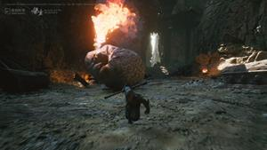
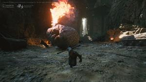

Black Myth: Wukong
Sobre Black Myth: Wukong
Quando Black Myth: Wukong foi lançado?
Black Myth: Wukong foi lançado em 20 de agosto de 2024. O jogo estreou simultaneamente no PlayStation 5 e no PC (Windows), enquanto a versão para Xbox Series X/S foi adiada, sem data de lançamento específica anunciada até o momento.
Em quais plataformas está disponível?
- PlayStation 5
- PC (Windows)
- Xbox Series X/S
O lançamento simultâneo em PS5 e PC ocorreu em 20 de agosto de 2024. A versão para Xbox Series X/S foi adiada enquanto os desenvolvedores trabalham em sua otimização para a plataforma.
Há quanto tempo estão trabalhando no jogo?
A Game Science, desenvolvedora de Black Myth: Wukong, começou a trabalhar no jogo em 2017. O projeto foi revelado ao público em 20 de agosto de 2020, com um vídeo de gameplay pré-alpha de 13 minutos que rapidamente se tornou viral, acumulando milhões de visualizações no YouTube e no Bilibili.
Requisitos de sistema
Requisitos mínimos
- SO: Windows 10 64-bit
- CPU: Intel Core i5-8400 ou AMD Ryzen 5 1600
- Memória: 16 GB RAM
- Placa gráfica: NVIDIA GeForce GTX 1060 6GB ou AMD Radeon RX 580 8GB
- DirectX: Versão 11
- Armazenamento: 130 GB de espaço disponível (HDD suportado, SSD recomendado)
- Placa de som: dispositivo de áudio compatível com Windows
Recomendado
- SO: Windows 10 64-bit
- CPU: Intel Core i7-9700 ou AMD Ryzen 5 5500
- Memória: 16 GB RAM
- Placa gráfica: NVIDIA GeForce RTX 2060 ou AMD Radeon RX 5700 XT ou INTEL Arc A750
- DirectX: Versão 12
- Armazenamento: 130 GB (SSD recomendado/necessário)
- Placa de som: dispositivo de áudio compatível com Windows
Configuração mínima para Ray Tracing (médio, RT baixo, 1080p)
- CPU: Intel Core i5-9400 ou AMD Ryzen 5 1600
- Placa gráfica: NVIDIA GeForce RTX 3060
- VRAM: 8 GB
Configuração Ultra Ray Tracing (alto, RT ultra, 4K)
- CPU: Intel Core i7-9700 ou AMD Ryzen 5 5500
- Placa gráfica: NVIDIA GeForce RTX 4080 Super
- VRAM: 16 GB
- RAM: 32 GB
O que é a Wiki Black Myth: Wukong?
Bem-vindo à Wiki Black Myth: Wukong, um recurso abrangente criado coletivamente por entusiastas, dedicado a explorar todos os aspectos deste jogo altamente aguardado.
Nossa Wiki é completamente open-source, o que significa que qualquer jogador pode tornar-se um contribuidor. Se você encontrar informações que precisam ser atualizadas ou corrigidas, ou tiver novos insights para compartilhar, visite nossa página no GitHub para enviar sugestões ou participar diretamente da edição. Acreditamos que a sabedoria coletiva cria o guia mais rico e preciso.
Participe na construção da biblioteca de recursos mais completa sobre Black Myth: Wukong. Cada contribuição ajuda jogadores ao redor do mundo a aproveitar melhor o jogo. Visite nossa Wiki e comece sua jornada de exploração!
Últimas notícias
Detalhes das edições de pré-venda
Black Myth: Wukong tornou-se o jogo mais adicionado à lista de desejos no Steam. O jogo oferece três edições de pré-venda:
- Edição Digital ($69,99): inclui diversos itens in-game e trilha sonora digital.
- Edição Deluxe ($169): inclui steelbook, réplica da bandana em escala 1:1 e conteúdo adicional físico e digital.
- Edição de Colecionador ($399): contém uma estátua de Sun Wukong de 40 cm, pergaminho de seda e vários itens premium.
Marco de pré-vendas
Relatos indicam que Black Myth: Wukong alcançou 1,1 milhão de pré-vendas em poucos dias após a abertura das pré-vendas físicas e digitais em 8 e 11 de junho, demonstrando enorme apelo pelo título.
Progresso do desenvolvimento
A Game Science declarou que Black Myth: Wukong está sendo desenvolvido com Unreal Engine 5 e utiliza a tecnologia DLSS da NVIDIA, prometendo experiências visuais aprimoradas.
Controvérsia entre Black Myth: Wukong e Sweet Baby
Contexto
Recentemente, surgiu uma controvérsia envolvendo Black Myth: Wukong e a consultoria Sweet Baby. A Sweet Baby é uma firma de consultoria que fornece orientações de "correção política" a estúdios, ajudando a adequar conteúdo a certos padrões sociais e culturais.
Detalhes
Segundo relatos, a Sweet Baby teria exigido uma taxa de orientação de US$ 7 milhões da Game Science para garantir conformidade com seus padrões. A Game Science teria recusado a cobrança.
Repercussão
Após a recusa, a Game Science alega ter sido alvo de ataques e difamação por parte de mídias ocidentais, com acusações de discriminação de gênero no jogo. A Sweet Baby é acusada de usar influência midiática em retaliação pela recusa do pagamento.
Reação da comunidade
A controvérsia gerou amplo debate na comunidade de jogos. Jogadores e profissionais da indústria expressaram indignação diante das alegações, considerando-as antiéticas e prejudiciais. Há quem defenda que consultorias não deveriam controlar a direção criativa dos desenvolvedores por meio de pressões financeiras.
Resposta oficial
Até o momento, a Game Science não emitiu declaração oficial sobre o caso. Com a proximidade do lançamento, o conflito poderá influenciar o desempenho comercial do jogo.
Perspectiva futura
Apesar da controvérsia, Black Myth: Wukong segue como um dos títulos mais aguardados de 2024. Jogadores aguardam explorar seu mundo inspirado na mitologia chinesa e experimentar seu sistema de combate e habilidades de transformação. Mais detalhes deverão ser divulgados conforme a data de lançamento se aproxima.
Galeria


 
